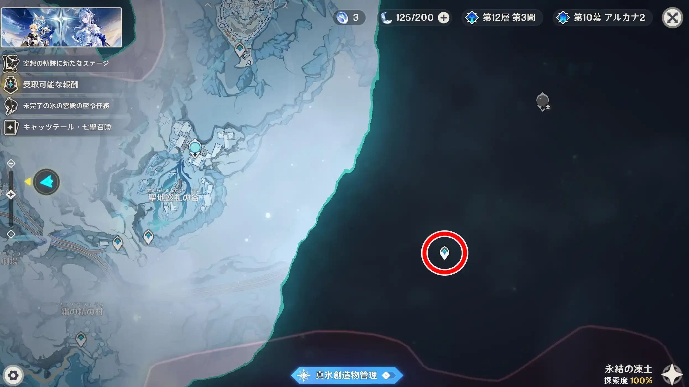
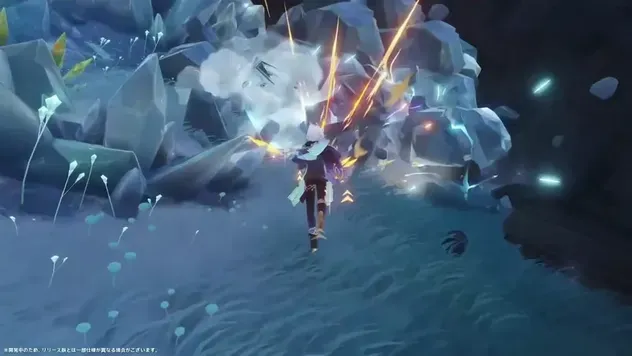
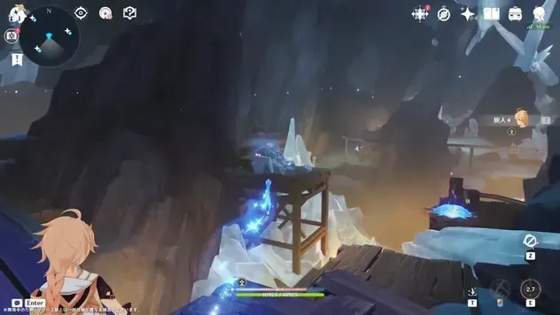
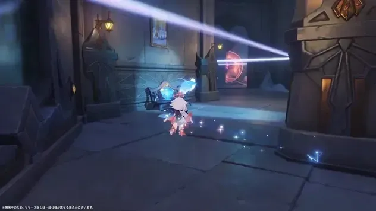
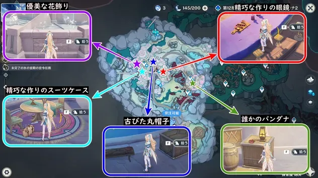

「晶石の森」
晶石の森（ノヴォキッチェヴ）の行き方は、スノウバーチ駅で発生する世界任務「晶鉱の街へ」を進めると行くことができます。
スノウバーチ駅への行き方は既に解放されているワープポイントを使って行くことが可能です。

晶石の森の特殊ギミック一覧
晶石の森の坑道内にある岩の塊は、真氷凝結で作られた「ツルハシ」を使用することで破壊できます。
また、ミティアの検知器を使用しても同様に岩の塊を破壊可能です。
岩の塊を壊すことで、道を切り開いて探索を進められます。


パイモンと協力する謎解き
晶石の森の神秘的なエリアでは、パイモンと協力して解く謎解きギミックが登場します。
旅人が入れない狭い場所や仕掛けの先へパイモンが進み、光の反射装置を操作するなど、
2人で協力して謎を解き明かします。

ノヴォキッチェヴの世界任務【ノヴォキッチェヴの落とし物】

優美な花飾り
ノヴォッキチェヴの落とし物の「優美な花飾り」は、ノヴォキッチェヴ西側にある噴水の縁にあります。
スーツケース
ノヴォッキチェヴの落とし物の「精巧な作りのスーツケース」は、ノヴォッキチェヴ西側のワープポイントの南側にある家の椅子の足元にあります。
誰かのバンダナ
ノヴォッキチェヴの落とし物の「誰かのバンダナ」は、ノヴォッキチェヴの東側にあるワープポイントの南側の箱の上にあります。詳細な場所としては、料理人のムティがいる場所の左側です。
精巧な作りの眼鏡
ノヴォッキチェヴの落とし物の「精巧な作りの眼鏡」は、レストラン「ペチカ・ポーグリプ」のカウンターにあります。
古びた丸帽子
ノヴォッキチェヴの落とし物の「古びた丸帽子」は、マリシュカ秘宝店近くの椅子にあります。詳細な場所としては、「カズミッチ」のお店の左側にある椅子の上です。